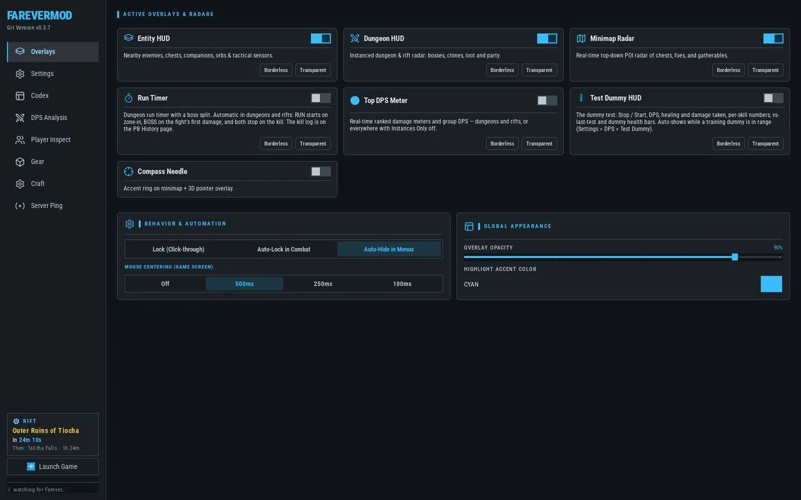

Farever Companion
FareverMod is a companion app for Farever. It includes six HUD overlays and nine sidebar pages in one companion window, with chest and Secret Orb tracking, a minimap, a DPS meter, and gear, weapon and mob lookups—all using the game’s own data.

Releases
App Ui
The app’s sidebar pages, captured from a real session — pick one to see them full of real data.
- Overlays: every HUD window’s visibility, borderless and transparent modes, click-through lock, opacity and accent colour.
- DPS Analysis: encounter DPS timeline, per-player rails and a per-skill table for each fight.
- Gear: boss drops and the faction’s shared set, side by side, from the Dungeons tab.
- Codex: every unit as a card grouped by zone, plus a Collection tab for pets, mounts, gliders, chests and orbs.
- Craft: recipes with their full supply chain, crafting jobs and a craft list totalling a build’s materials.
- Settings · Rift: upcoming rift schedule with lead-time alerts, computed from the game’s hourly clock.
- PB History: recorded runs with full and boss split times, plus best-run readouts.
- Player Inspect: a player’s gear grid, buffs and total stats.
- Server Ping: region ping test against the game servers and Global Login, plus an IP scanner and network trace.


HUD Overlays
The six HUD windows that draw over the game — pick one to see it live.
- Top DPS Meter: ranked group damage, healing and damage taken, from the game’s own per-hit events.
- Entity HUD: nearby enemies, chests, companions and orbs with live distances.
- Minimap Radar: top-down radar of chests, foes, gatherables and party markers, with Circle or Square shape and zoom.
- Dungeon HUD: bosses, clones, loot, party and Secret Orbs inside the instance you are in.
- Run Timer: automatic run clock with a boss split, started on zone-in and stopped on the kill.
- Test Dummy HUD: DPS, healing and damage taken against a training dummy, with per-skill rows.


Features
⚔️ Top DPS Meter
Ranked damage meters and group DPS, built from the game's own per-hit damage events. Meters the instance in dungeons and rifts, everywhere with Instances Only off. A SOURCE badge names the active DPS source (LIVE / CAL / IDLE); the meter stays empty — never HP-derived — until real events flow.
💎 Entity HUD
Nearby enemies, chests, companions, orbs and tactical sensors with the game's own icons and live distance, grouped by layer.
🗺️ Minimap Radar
A real-time top-down POI radar of chests, foes and gatherables, with a Circle / Square shape and Map Zoom. Right-click a marker to toggle it done / undone for that character, and the Compass Needle adds "Accent ring on minimap + 3D pointer overlay".
🌀 Dungeon HUD
An instanced dungeon and rift radar: bosses, clones, loot and party, with Secret Orbs detected live — the instance and activity orbs stay out of the overworld's static RedOrb_World index on purpose.
🏃 Run Timer
Automatic in dungeons and rifts: RUN starts on zone-in, BOSS on the fight's first damage, and both stop on the kill. The kill log lives on the PB History page.
🎯 Test Dummy HUD
The dummy test: the Stop / Start Test button, DPS, healing and damage taken, per-skill numbers, VS LAST TEST, SPLIT BY TARGET and the target's health bar. Auto-shows while a training dummy is in range; its chrome lives in Settings · HUD's.
📊 DPS Analysis
The meter's history: the Encounter DPS Timeline, per-player rails (RANK / PLAYERS / CLASS / DPS / SHARE / CRIT %), a SEGMENT control (Boss / Trash / Adds / Overall) and the per-skill table — SKILL, TOTAL, %, HITS, CRIT% and Avg Hit — with PB History one click away.
🏆 PB History
Every recorded run with the app's own columns: When, Character, Dungeon, Boss, Mode, Full and Boss split. RUNS / CHARACTERS / BEST FULL / BEST BOSS readouts above; the table filters by Character and Dungeon.
🧍 Player Inspect
A per-slot gear grid — weapons, armor, jewelry, tools, Pet, Glider, Mount, Job Tool and Pickaxe — with the member's Consumables, Buffs and a Total Stats block beside the Selected Piece view.
🛡️ Gear & enchant planning
Gear, Items, Enchants and Farm tabs: every item with its sources and farm rows, then planning for GEM, the Corrupted Gift gear conversions, Elixirs, Food, enchant scrolls, Magic Formulas, Infusions, gear Upgrades and the Soulwell.
📖 Codex · Zones
Every unit as a card, grouped by zone — with the Dungeons and Collection tabs beside it, search and filter legends above the list. Each card is drawn from the game's own data.
🐱 Codex · Collection
The Collection tab splits into Pets / Mounts / Gliders / Chests / Orbs sub-views, each a card grid of every collectible with counted Visible (N) / Hidden (N) / Nearby filters. The Missing (N) button plots every unowned entry's spawn as pins on the world map in one click, so a quick sweep through the level is one pane switch away; hidden entries stay hidden until you ask for them.
⚒️ Craft
Recipes with their supply chain, crafting jobs, and a craft list that totals up everything a build still needs.
🔮 Rift schedule
Settings · Rift opens on the Upcoming Rift Schedule — the LIVE RADAR & TIMETABLE: the next rift with its countdown, the Lead Time chips (15m / 10m / 5m / 1m / Live) and a Time / Zone table for what follows, plus Audio Alerts chime reminders. The sidebar carries the Rift Schedule Card, and it all runs on pure clock math — the game's own hourly algorithm, so it keeps counting with the game closed.
📡 Server diagnostics
A Region Ping Test against the game servers and Global Login, the Live Game IP Scanner tab, and a Network Trace tab, with Diagnostic Tools beside them.
🎛️ Overlays control
One page for the whole HUD set: per-window visibility, Borderless and Transparent, Lock (Click-through), Auto-Lock in Combat, Auto-Hide in Menus and Mouse Centering (Game Screen) — plus Overlay Opacity and the Highlight Accent Color.
🧩 Modules you can switch off
Settings · Pages turns any page off so it never builds, Settings · Layers owns which entity and gatherable types are drawn, and Settings · HUD's owns the per-HUD chrome and notifications.
DPS capture modes
The meter's combat feed depends on the mode you pick in Settings · DPS (the Combat DPS Engine panel). Both DLL modes only stream combat events out; drops and game state are never touched.
Hot-injects a hook DLL into the running game. Full combat event coverage without touching the game folder.
A proxy DLL placed in the game folder for the game to load itself on startup. No runtime injection.
Pure passive memory reads with no DLL at all — the strictly DLL-free session.
Data & save files
All settings and progress are stored in a moddata/ folder created automatically next to FareverMod.exe on first run. Back it up, move it between machines, or delete it to reset everything.
| File | What it stores |
|---|---|
moddata/settings.json | Global app settings — overlay positions, toggles, hotkeys, disabled pages |
moddata/progress_<CharacterName>.json | Per-character progress — collectibles marked done, hidden entities, per-boss bests |
moddata/collection.json | Collection data behind the codex's collection view |
moddata/dps/ | Combat history — one file per fight, read back by DPS Analysis and PB History |
moddata/speedrun_history.json | Runs and bests shared across characters, behind PB History |
Each character gets their own progress file. When the tool detects which character you're playing, it loads that character's progress automatically. Every write is atomic (temp file, then replace) and a file that won't parse is preserved as a .bak beside the original, so there is always one previous copy to fall back on.
Running from source writes to dist/moddata instead; a released FareverMod.exe keeps everything in moddata/ beside the exe. If a data file comes back unreadable, the next launch offers a Data Recovery & Backups window — the app's own title — that can restore it.
How it works
- Read-only core: the overlays and minimap read the game's memory from a separate process with a read-only handle. They never change game state or items.
- Reflection, not fixed addresses: the game runs on HashLink, which keeps class and field names in the runtime, so objects are identified by name rather than by brittle addresses.
- Loot sources: gear, chests, vendors, crates and craft material rows come from scanned acquisition data and the game's loot tables — the what and where, not a live roll. Drops are server-authoritative. Every game item, mob, armor piece and other in-game entry the app shows come from the game's own files — nothing in the app requires looking anything up on another site.
- DPS capture modes: the combat feed needs game events — proxy DLL, hot injector (default), or DLL-free memory reader. Totals come from the game's own per-hit damage objects, never from HP polling.
- One anchor for your character: a single long-lived object is resolved and followed each frame, so tracking survives zone changes and menus without rescanning the heap.
Credits
FareverMod is an unofficial, community fan tool. It is not affiliated with or endorsed by the developers of Farever. Please buy and support the game on Steam. This tool is taken down, or has any contested content stripped, on request from the developers.
The game
- Farever and all of its names, data, icons, and assets belong to its developers. All game-derived data, imagery, and the minimap's world-to-pixel coordinate calibration are produced in-house from the game's own files — no third-party sites, map layers, or community maps are used.
- Built on the Heaps engine and the HashLink VM.
Origins
- FareverMod is based on Popparoni/FareverPal. Full credit for the original codebase and concept goes to Popparoni.
Bundled fonts & icons
- Roboto Condensed — SIL Open Font License 1.1
- Lucide icons — ISC License